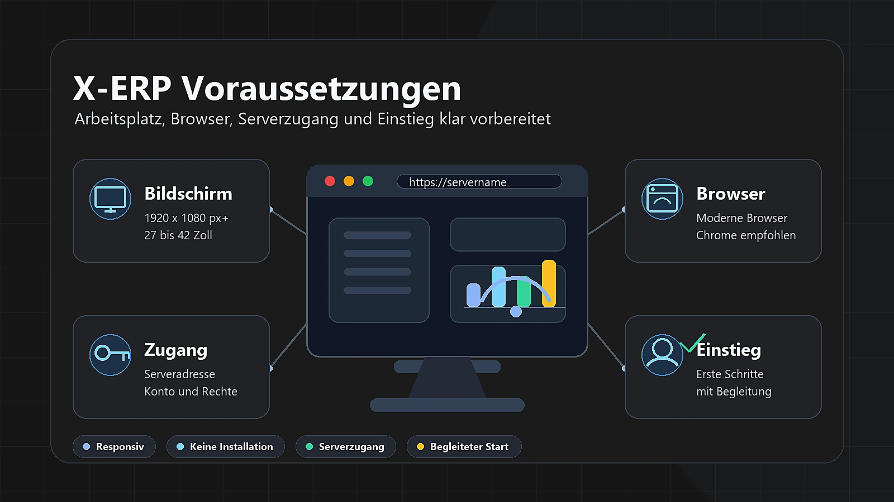

Voraussetzungen
Einordnung
X-ERP Hilfe > Grundlagen > Voraussetzungen
X-ERP läuft als moderne Webanwendung im Browser. Für die tägliche Arbeit sollten Arbeitsplatz, Browser und Zugang zum X-ERP-Server vorbereitet sein.

Arbeitsplatz und Bildschirm
X-ERP ist vollständig responsiv und kann auf unterschiedlichen Bildschirmgrößen genutzt werden. Für effizientes Arbeiten empfehlen wir eine Bildschirmauflösung von mindestens 1920 × 1080 Pixeln. Für eine gute Lesbarkeit sind Bildschirmdiagonalen von 27 bis 42 Zoll empfehlenswert.
Für den produktiven Einsatz sind zwei bis drei Bildschirme ideal. Bei Bedarf können auch mehr Bildschirme pro Arbeitsplatz genutzt werden.
Browser
Unterstützt werden aktuelle Versionen gängiger moderner Browser. Für die beste Kompatibilität und Performance empfehlen wir Google Chrome.
Zugang zum X-ERP-Server
Vor der ersten Anmeldung muss Ihr Administrator oder Fachhändler den Zugang zum X-ERP-Server einrichten. Dazu gehören die Serveradresse, Ihr Benutzerzugang und die für Ihre Aufgaben passenden Berechtigungen.
Außerdem sollte X-ERP vor dem Start für Ihr Unternehmen konfiguriert sein, damit Masken, Rechte, Stammdaten und Abläufe zu Ihrem Einsatzbereich passen.
Begleiteter Einstieg
Für die ersten Arbeitsschritte ist eine Begleitung durch einen erfahrenen Anwender, Administrator oder Fachhändler sinnvoll. So lernen Sie die wichtigsten Abläufe direkt anhand Ihrer Unternehmensdaten kennen und vermeiden typische Startfehler.